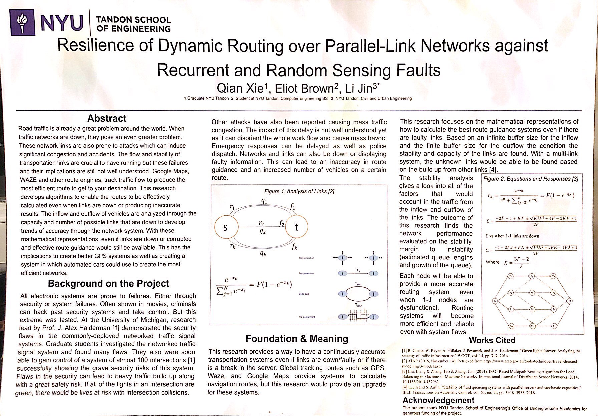

A http://letmecode.tech/
Inspiration: As a student studying Computer Engineering, many of the Computer Science classes have tests which are handwriten. Because of this, many students practise problems by handwriting code and then having to retype it to test it. After repeatedly doing this, it is both very tedious so we created a platform which allows you to practise handwriting code, but skips the time consuming steps of retyping it. On this webpage, it will automatically transfer your handwritten code, to compilable code on a specified IDE.
Technology Used: Trained two google-cloud API’s (Vision & Auto-ML), Flask, Python, C++, JavaScript, HTML, CSS, Bootstrap
Inspiration: As a student studying Computer Engineering, many of the Computer Science classes have tests which are handwriten. Because of this, many students practise problems by handwriting code and then having to retype it to test it. After repeatedly doing this, it is both very tedious so we created a platform which allows you to practise handwriting code, but skips the time consuming steps of retyping it. On this webpage, it will automatically transfer your handwritten code, to compilable code on a specified IDE.
Technology Used: Trained two google-cloud API’s (Vision & Auto-ML), Flask, Python, C++, JavaScript, HTML, CSS, Bootstrap
LetMeCode is a project created for HackNYU 2020. This webapplication now allows you to handwrite
code on tablets, a computer, or any device. http://letmecode.tech/
Inspiration: As a student studying Computer Engineering, many of the Computer Science classes have tests which are handwriten. Because of this, many students practise problems by handwriting code and then having to retype it to test it. After repeatedly doing this, it is both very tedious so we created a platform which allows you to practise handwriting code, but skips the time consuming steps of retyping it. On this webpage, it will automatically transfer your handwritten code, to compilable code on a specified IDE.
Technology Used: Trained two google-cloud API’s (Vision & Auto-ML), Flask, Python, C++, JavaScript, HTML, CSS, Bootstrap
Inspiration: As a student studying Computer Engineering, many of the Computer Science classes have tests which are handwriten. Because of this, many students practise problems by handwriting code and then having to retype it to test it. After repeatedly doing this, it is both very tedious so we created a platform which allows you to practise handwriting code, but skips the time consuming steps of retyping it. On this webpage, it will automatically transfer your handwritten code, to compilable code on a specified IDE.
Technology Used: Trained two google-cloud API’s (Vision & Auto-ML), Flask, Python, C++, JavaScript, HTML, CSS, Bootstrap

BeeCareful is a website created and designed for HackNYU 2019.
Project: Produced BeeCareful to track what websites and applications do with users data.
It was made as central platform for common users to understand the tracking of their data. Users can
submit information about sites activities, cite their information, and build a reliable reputation.
Won MLH Sponsorship for best use of their domain.
Inspiration: Everyone uses the Internet. Data privacy is a big deal. The GDPR's for Europe, what about the rest of the world? Enter BeeCareful: Simple crowdsourced details about what websites are using your data for what. Non-for-profit model? Check. Cryptographically secure? Check. Open for contributors? Check. Bees are everywhere. Your data should not be. BeeCareful lets you Be Carefree!
Software: Flask, Python, JavaScript, HTML, CSS, XML
Inspiration: Everyone uses the Internet. Data privacy is a big deal. The GDPR's for Europe, what about the rest of the world? Enter BeeCareful: Simple crowdsourced details about what websites are using your data for what. Non-for-profit model? Check. Cryptographically secure? Check. Open for contributors? Check. Bees are everywhere. Your data should not be. BeeCareful lets you Be Carefree!
Software: Flask, Python, JavaScript, HTML, CSS, XML

This was the Presentation poster made for the Undergraduate Summer Research Program at New York
University for the summer of 2019. After participating in Professor Li Jin's lab for the summer,
I got to present my research and findings.
As a member of this research team, I focused on deriving mathematical equations which would give analysis to the stability of network links. Specifically these links were used to represent GPS systems, including density of traffic, intersections, inflow and outflow to show how accurate and stable GPS routing guides are. The stability of these routing equations were then analyzed to show how accurate they would be if k number of links were down or presenting false information.
As a member of this research team, I focused on deriving mathematical equations which would give analysis to the stability of network links. Specifically these links were used to represent GPS systems, including density of traffic, intersections, inflow and outflow to show how accurate and stable GPS routing guides are. The stability of these routing equations were then analyzed to show how accurate they would be if k number of links were down or presenting false information.